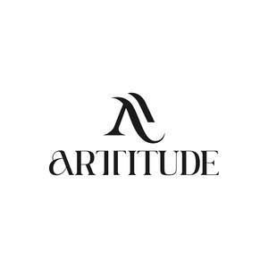
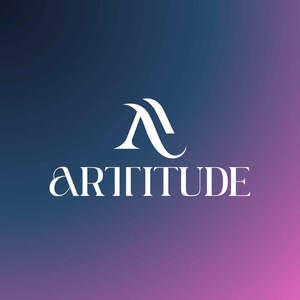

Trade Mark Journal No.2025/020 16 May 2025
UK00004193444 23 April 2025 (3,18,20,21,24,25,35,44)
Mark 1

Mark 2

- Class 3
- Cosmetics; Skincare cosmetics; Moisturisers [cosmetics]; Cosmetics and cosmetic preparations; Hair cosmetics; Skin fresheners [cosmetics]; Cosmetics for eye-lashes; Anti-aging moisturizers used as cosmetics; Cosmetics for suntanning; Organic cosmetics; Nail cosmetics; Lip cosmetics; Non-medicated cosmetics; Skin moisturizers used as cosmetics; Natural cosmetics; Mousses [cosmetics]; Cosmetics preparations; Make-up palettes containing cosmetics; Tanning gels [cosmetics]; Tanning oils [cosmetics]; Cosmetics in the form of lotions; Colour cosmetics; Facial creams [cosmetics]; Beauty care cosmetics; Self-tanning preparations [cosmetics]; Suncare lotions [for cosmetic use]; Cosmetics for animals; Eyebrow cosmetics; Tanning preparations [cosmetics]; Decorative cosmetics; Multifunctional cosmetics; Milks [cosmetics]; Eye cosmetics; Body creams [cosmetics]; After-sun oils [cosmetics]; Skin masks [cosmetics]; Tanning milks [cosmetics]; Cosmetics for eye-brows; Functional cosmetics; Suntan oils [cosmetics]; Facial gels [cosmetics]; Skin care cosmetics; Fluid creams [cosmetics]; Cosmetics for children; Suntan lotion [cosmetics]; Non-medicated cosmetics and toiletry preparations; Humectant preparations [cosmetics]; Emollient preparations [cosmetics]; Cosmetics in the form of creams; Powder compacts [cosmetics]; Sun-tanning preparations [cosmetics]; Cosmetic hair lotions; Suntanning oil [cosmetics]; After-sun milk [cosmetics]; After-sun milks [cosmetics]; Colour cosmetics for the skin; Cosmetics for use on the skin; Cosmetic moisturisers; Sunscreens [for cosmetic use]; Cosmetic creams and lotions; Bath powder [cosmetics]; Night creams [cosmetics]; Skin recovery creams [cosmetics]; Body gels [cosmetics]; Sun blocking lipsticks [cosmetics]; Cosmetics for the use on the hair; Cosmetic products in the form of aerosols for skincare; Body and facial creams [cosmetics]; Sunscreen [for cosmetic use]; Sunscreen creams [for cosmetic use]; Lip stains [cosmetics]; Creams (Cosmetic -); Cosmetic creams; Body care cosmetics; Cosmetic soaps; Cosmetics containing keratin; Cosmetics in the form of powders; Hair care lotions [for cosmetic use]; Cosmetic skin fresheners; Dyes (Cosmetic -); Cosmetic dyes; Cosmetics containing panthenol; After-sun lotions [for cosmetic use]; Beauty lotions; Cosmetic facial lotions; Facial lotions [cosmetic]; Cosmetics in the form of oils; Cosmetic suntan lotions; Nail paint [cosmetics]; Colour cosmetics for children; Skin care lotions [cosmetic]; Perfume oils for the manufacture of cosmetic preparations; Nail hardeners [cosmetics]; Tissues impregnated with cosmetics; Anti-aging creams [for cosmetic use]; Sun protecting creams [cosmetics]; Nail tips [cosmetics]; Nail primer [cosmetics]; Cosmetic products for the shower; Smoothing emulsions [cosmetics]; Anti-ageing creams [for cosmetic use]; Perfumed powders [for cosmetic use]; Skin cleansers [cosmetic]; Liners [cosmetics] for the eyes; Moisturising skin lotions [cosmetic]; Cosmetic creams for the skin; Skin creams [for cosmetic use]; Skin creams [cosmetic]; Body and facial gels [cosmetics]; Make-up; Makeup; Skin make-up; Make-up remover; Facial makeup; Make-up for the face; Make-up pencils; Make-up removers; Eye make-up; Make-up powder; Powder (Make-up -); Powder for make-up; Make-up primer; Chalk for make-up; Make-up preparations; Make-up primers; Eyes make-up; Make-up for compacts; Foundation make-up; Make-up foundation; Make-up kits; Lip makeup; Nail makeup; Make-up foundations; Theatrical makeup; Make-up removing lotions; Eye makeup; Eye make-up removers; Natural makeup; Make-up base; Make-up removing creams; Make-up for the face and body; Make-up preparations for the face and body; Make-up removing gels; Eye makeup remover; Organic makeup; Make-up removing preparations; Multifunctional makeup; Make-up removing milk; Fake blood being theatrical make-up; Make-up removing milks; Hairstyling masks; Makeup setting sprays; Compacts containing make-up; Eyelid doubling makeup; Hair mascara; Cosmetic hair dressing preparations; Hairstyling serums; Facial moisturisers [cosmetic]; Cosmetic facial masks; Facial masks [cosmetic]; Facial beauty masks; Facial concealer; Tissues impregnated with make-up removing preparations; Hair styling lotions; Facial cleansers [cosmetic]; Eye-shadow; Beauty preparations for the hair; Facial wipes impregnated with cosmetics; Hair care creams [for cosmetic use]; Eyeliner; Facial creams [cosmetic]; Facial creams [for cosmetic use]; Make-up bases in the form of pastes; Hair masks; Cosmetic masks; Colour cosmetics for the eyes; Hair moisturisers; Cosmetic hair care preparations; Beauty serums; Beauty creams; Beauty masks; Masks (Beauty -); Beauty soap; Beauty milk; Beauty gels; Beauty milks; Beauty creams for body care; Beauty balm creams; Beauty care preparations; Distilled oils for beauty care; Beauty tonics for application to the face; Beauty masks for hands; Beauty serums with anti-ageing properties; Beauty tonics for application to the body; Body cleaning and beauty care preparations; Non-medicated beauty preparations; Natural perfumery; Natural oils for cosmetic purposes; Cosmetic products in the form of aerosols for skin care; Sets of cosmetic oral care products; Perfumery products; Lotions for cosmetic purposes; Anti-ageing serums for cosmetic purposes; Skin balms [cosmetic]; Skin care oils [cosmetic]; Cosmetic kits; Kits (Cosmetic -); Cosmetic pencils; Pencils (Cosmetic -); Tonics [cosmetic]; Collagen for cosmetic purposes; Pro-collagen for cosmetic purposes; Cotton for cosmetic purposes; Lacquer for cosmetic purposes; Henna for cosmetic purposes; Procollagen for cosmetic purposes; Lip coatings [cosmetic]; Self tanning lotions [cosmetic]; Self tanning creams [cosmetic]; Lip stains for cosmetic purposes; Pencils for cosmetic purposes; Serums for cosmetic purposes; Geraniol for cosmetic purposes; Body oil [for cosmetic use]; Petroleum jelly for cosmetic purposes; Jelly (Petroleum -) for cosmetic purposes; Cosmetic powder; Cosmetic facial packs; Facial packs [cosmetic]; Cosmetic tanning preparations; Body paint for cosmetic purposes; Toners for cosmetic purposes; Adhesives for cosmetic purposes; Facial toners [cosmetic]; Bath tea for cosmetic purposes; Body paint (cosmetic); Facial cream [for cosmetic use]; Lip protectors [cosmetic]; Rose oil for cosmetic purposes; Cosmetic rouges; Toning creams [cosmetic]; Body oils [for cosmetic use]; Cotton buds for cosmetic purposes; Retinol cream for cosmetic purposes; Cotton puffs for cosmetic purposes; Anti-wrinkle cream [for cosmetic use]; Anti-wrinkle creams [for cosmetic use]; Bath oils for cosmetic purposes; Pomades for cosmetic purposes; Glitter for cosmetic purposes; Mask pack for cosmetic purposes; Cosmetic eye pencils; Cosmetic massage creams; Skin hydrators for cosmetic purposes; Cosmetic preparations; Cosmetic soap; Suntan oils for cosmetic purposes; Anti-aging serum for cosmetic use; Cotton swabs for cosmetic purposes; Nail varnish for cosmetic purposes; Mineral oils [cosmetic]; Skin cream [for cosmetic use]; Cosmetic skin enhancers; Pencils for cosmetic use; Acne cleansers, cosmetic; Geraniol for cosmetic use; Facial scrubs [cosmetic]; Massage candles for cosmetic purposes; Skin toners [cosmetic]; Cosmetic body scrubs; Body scrubs [cosmetic]; Castor oil for cosmetic purposes; Cosmetic preparations for slimming purposes; Slimming purposes (Cosmetic preparations for -); Almond oil for cosmetic purposes; Essences for cosmetic purposes; Sheet masks for cosmetic purposes; Tooth powders [for cosmetic use]; Hydrolyzed collagen for cosmetic purposes; Amla oil for cosmetic purposes; Temporary tattoos for cosmetic purposes; Cosmetic stamps, filled; Milk for cosmetic purposes; Cotton balls for cosmetic purposes; Removable tattoos for cosmetic purposes; Transfers (Decorative -) for cosmetic purposes; Decorative transfers for cosmetic purposes; Recovery creams for cosmetic use; Skin conditioning creams for cosmetic purposes; Cooling sprays for cosmetic purposes; Bleaching preparations for cosmetic purposes; Gels for cosmetic purposes; Ointments for cosmetic use; Cleansing creams [cosmetic]; Adhesives for cosmetic use; Anti-aging skincare preparations; Skincare preparations; Anti-aging moisturizers; Anti-ageing moisturiser; Non-medicated skincare preparations; Suncare lotions; Anti-ageing creams; Anti-aging creams; Skin moisturisers; Skin moisturizers; Skin moisturizer; Skin moisturiser; Moisturisers; Skin care creams [cosmetic]; Cosmetic creams for skin care; Cosmetic nourishing creams; Skin cleansers; Moisturiser; Moisturizers; Skin moisturizer masks; Anti-ageing serum; Exfoliants for the care of the skin; Non-medicated skin serums; Exfoliants for the cleansing of the skin; Facial moisturizers; Moisturising body lotion [cosmetic]; Skin lotions; Lotions for the skin; Skin cleansing lotion; Creams (Skin whitening -); Skin whitening creams; Sun care lotions [for cosmetic use]; Exfoliating creams; Skin cleansers [non-medicated]; Moisturizing creams; Creams for tanning the skin; Skin whitening preparations [cosmetic]; Cosmetics for use in the treatment of wrinkled skin; Aromatherapy creams; Anti-aging cream; Skin lotion; Aromatherapy lotions; Skin hydrators; Cleansing lotions; After-sun lotions; Facial cleansers; Hair care serums; Anti-wrinkle creams; Moisturising creams; Self-tanning preparations [cosmetic]; Cosmetic preparations for skin firming; Exfoliant creams; Moisturising gels [cosmetic]; Moisturizing preparations for the skin; Hair moisturizers; Skin creams; Creams for the skin; Non-medicated skin lotions; Nail varnish remover [cosmetics]; Nail polish removers [cosmetics]; Glitter in spray form for use as a cosmetics; Mascara; Pores tightening mask packs used as cosmetics; Cleaner for cosmetic brushes; Make-up pads of cotton wool; Gel nail removers; Eyeshadow; Facial serum for cosmetic use; Pre-moistened cosmetic towelettes; Cotton swabs impregnated with make-up removing preparations; Eyeliner pencils; Nail base coat [cosmetics]; Nail polish remover pens; Liquid latex body paint for cosmetic purposes; Cosmetic hand creams; Facial washes [cosmetic]; Hair tonics [for cosmetic use]; Cosmetic nail preparations; Sun creams [for cosmetic use]; Face creams for cosmetic use; Exfoliating scrubs for cosmetic purposes; Hair shampoo; Hair shampoos; Hair dye; Hair relaxers; Hair pomades; Hair texturizers; Hair conditioner; Hair mousse; Hair lighteners; Dyes for the hair; Hair dyes; Hair bleaches; Hair bleach; Hair colourants; Hair serums; Hair lotion; Hair lotions; Hair rinses; Hair gel; Hair conditioners; Hair mousses; Hair color; Hair wax; Hair sprays; Hair colouring; Hair oils; Hair spray; Shampoos for human hair; Hair styling gel; Hair creams; Hair cream; Hair gels; Hair colorants; Hair nourishers; Hair emollients; Hair powder; Styling sprays for the hair; Baby hair conditioner; Tints for the hair; Hair tonics; Hair chalks; Hair oil; Hair styling waxes; Hair lacquer; Hair lacquers; Hair styling spray; Hair balsam; Hair styling gels; Hair balm; Hair balms; Styling gels for the hair; Colouring lotions for the hair; Hair tonic; Hair liquid; Styling paste for hair; Hair glaze; Non-medicated hair shampoos; Hair glazes; Hair and body wash; Hair rinses [for cosmetic use]; Cosmetic preparations for the hair and scalp; Hair liquids; Wax treatments for the hair; Skin lighteners; Skin emollients; Skin toner; Skin cream; Oils for the skin; Skin toners; Skin masks; Skin soap; Cosmetics for protecting the skin from sunburn; Skin lightening creams; Skin conditioners; Skin foundation; Skin cleansing cream; Cosmetic creams for dry skin; Milky lotions for skin care; Skin texturizers; Cosmetics for the treatment of dry skin; Skin fresheners; Creams for firming the skin; Skin care mousse; Skin calming serum; Tissues impregnated with a skin cleanser; Moisturising skin creams [cosmetic]; Cream for whitening the skin; Whitening the skin (Cream for -); Skin clarifiers; Non-medicated skin creams; Skin creams [non-medicated]; Skin relief serum [cosmetic]; Skin cleansing foams; Skin lightening compositions [cosmetic]; Cosmetic creams for firming skin around eyes; Essences for skin care; Skin emollients [non-medicated]; Skin cleansing cream [non-medicated]; Smoothing emulsions for the skin; Foot masks for skin care; Cleansing milks for skin care; Perfumed oils for skin care; Skin whitening preparations; Skin care oils [non-medicated]; Oils for moisturising the skin after sunbathing; Clay skin masks; Hand masks for skin care; Skin care preparations; Skin balms (Non-medicated -); Non-medicated skin balms; Skin tonics [non-medicated]; Wrinkle removing skin care preparations; Horse oil cream for skin care; Non-medicated stimulating lotions for the skin; Skin softening preparations; Cloths impregnated with a skin cleanser; Cosmetic preparations for skin care; Skin care (Cosmetic preparations for -); Skin, eye and nail care preparations; Non-medicated skin clarifying lotions; Skin cleaners [non-medicated]; Skin care products for animals; Wipes impregnated with a skin cleanser; Skin hydrators being injectable dermal fillers; Non medicated skin toners; Eyelashes; Long lash mascaras; Eyelashes (False -); False eyelashes; Cosmetic preparations for eye lashes; Eyebrow mascara; Adhesives for false eyelashes, hair and nails; Artificial eyelashes; Mascaras; Eyelash tint; Eyebrows [false]; Eyeliners; Adhesives for affixing false eyelashes; Eyelashes (Adhesives for affixing false -); Eye concealers; Eyelashes (Cosmetic preparations for -); Cosmetic preparations for eyelashes; Eyelash dye; Self-adhesive false eyebrows; False nails; Nails (False -); Face blusher; Lip pomades; Adhesives for affixing artificial eyelashes; Lip gloss palettes; Hair frosts; Blusher; Eyelid pencils; Eyeshadows; Hair moisturising conditioners; Lip glosses; Lip tints; Blushers; Eyelid shadow; Eye stylers; Concealers; Eyebrow powder; Hair care serum; Lipsticks; Mousses being hair styling aids; False fingernails; Hair protection mousse; Eyeshadow palettes; Lipstick; Blush pencils; Liquid eyeliners; Blush; Lip rouge; Lip pencils; Mattifying gel cream; Eyebrow colors in the form of pencils and powders; Sun bronzers; Cosmetic pencils for cheeks; Lipstick cases; Lip liner; Solid powder for compacts [cosmetics]; Lip cream; Polishes; Powder compact refills [cosmetics]; Lip liners; Creamy rouge; Denture polishes; Polishes (Denture -); Lip balm; Face glitter; Eyebrow pencils; Pencils (Eyebrow -); Lip balms; Cosmetics in the form of rouge; Nail glitter; Cosmetics in the form of eye shadow; Eyebrow gel; Creamy face powder; Henna powders; Liquid rouge; Fragrance sachets for eye pillows; Aromatherapy pillows comprising potpourri in fabric containers; Soap sheets; Sachets for perfuming linen; Linen (Sachets for perfuming -); Nail polish; Nail polish remover; Nail polish base coat; Nail polish top coat; Nail varnish.
- Class 18
- Make-up bags; Make-up boxes; Makeup bags; Make-up cases; Beauty cases; Beauty cases [not fitted]; Cosmetic bags; Cosmetic purses; Cosmetic cases sold empty; Cosmetic bags sold empty; Make-up bags sold empty; Make-up cases sold empty; Shaving bags sold empty; Toiletry bags sold empty; Tool bags of leather, empty; Bags for clothes; Bags; Tote bags; Luggage bags; Toiletry bags; Carrying bags; Cross-body bags; Bags for travel; Hand bags; Flight bags; Overnight bags; Beach bags.
- Class 20
- Make-up mirrors for purses; Make-up mirrors for the home; Make-up mirrors for travel use; Boxes for storage purposes [plastic]; Tool storage containers (non-metallic -) [empty]; Containers, not of metal [storage, transport]; Packing containers of plastic material; Boxes (packaging -) in flat form [plastic]; Metal tool cabinets; Tool boxes, not of metal; Tool cabinets (non-metallic -) [empty]; Display cases for merchandise; Display stands for merchandise; Floor units of cardboard for displaying merchandise; Display stands for selling goods; Furniture for displaying goods; Display racks for the display of goods for sale purposes; Shop furniture for use in displaying cards; Point of sale displays [furniture]; Clothes hangers and clothes hooks.
- Class 21
- Cosmetics brushes; Applicators for cosmetics; Cosmetics applicators; Containers for cosmetics; Dispensers for cosmetics; Racks for cosmetics; Holders for cosmetics; Make-up brushes; Make-up sponges; Facial sponges for applying make-up; Make-up artist belts; Eye make-up applicators; Applicators for applying eye make-up; Make-up removing appliances; Applicator sticks for applying make-up; Makeup sponge holders; Applicator sticks for applying makeup; Appliances for removing make-up, non-electric; Non-electric make-up removing appliances; Appliances for removing make-up, electric; Electric make-up removing appliances; Eyeliner brushes; Cosmetic, hygiene and beauty care utensils; Hand tools for the application of cosmetics; Cosmetic apparatus for microdermabrasion; Cosmetic sponges; Droppers for cosmetic purposes; Microdermabrasion sponges for cosmetic use; Cosmetic bags [fitted]; Cosmetic brushes; Cosmetic utensils; Droppers sold empty for cosmetic purposes; Cosmetic stamps, sold empty; Cosmetic powder compacts; Storage tins; Storage jars; Utensils for cosmetic purposes; Mascara brushes; Hair color application brushes; Eyelash brushes; Lip brushes; Sponges for applying body powder; Skin cleansing brushes; Plastic water bottles [empty]; Reusable plastic water bottles sold empty; Lotion containers, empty, for household use; Aluminum water bottles, empty; Reusable stainless steel water bottles sold empty; Empty spray bottles; Brushes; Hair for brushes; Hair brushes; Clothes brushes; Shaving brushes; Brushes (except paint brushes); Shampoo brushes; Hair tinting brushes; Exfoliating brushes; Nail brushes; Brushes for cleaning; Cleaning brushes; Eyebrow brushes; Brushes (except paintbrushes); Brushes for personal hygiene; Electric rotating hair brushes; Facial cleansing brushes, electric and non-electric; Magnetic sweepers; Sonic oscillating brushes for skincare; Hair combs; Combs for back-combing hair; Combs for the hair (Large-toothed -); Large-toothed combs for the hair; Electric hair combs; Skin care cream dispensers; Eyelash combs; Eyelash Separators; Bottle brushes.
- Class 24
- Make-up removal towels [textile] other than impregnated with cosmetics; Make-up removal wipes [textile] other than impregnated with cosmetics; Make-up removal cloths [textile], other than impregnated with cosmetics; Make-up pads of textile for removing make-up; Cloths for removing make-up; Make-up pads of textile; Textile napkins for removing makeup; Make-up removal wipes [textile] other than impregnated with toilet preparations; Make-up removal cloths [textile], other than impregnated with toilet preparations; Make-up removal towels [textile] other than impregnated with toilet preparations; Make-up (Napkins for removing -) [cloth]; Cloth napkins for removing make-up; Pillowcases; Pillowcases [pillow slips]; Bed quilts; Bedspreads; Bedsheets; Bed linen and blankets; Silk bed blankets; Bed blankets made of cotton; Linens; Bed linen; Bath sheets (towels); Bed clothes and blankets; Flannel [fabric]; Bed blankets; Silk blankets.
- Class 25
- Clothes; Clothing; Loungewear; Nightwear; Casual clothing; Headbands [clothing]; Hoodies; Jogging sets [clothing]; Nightgowns; Bed socks; Sleep shirts; Headwear; Headgear; Beanie hats; Footwear.
- Class 35
- Marketing research in the fields of cosmetics, perfumery and beauty products; Retail store services in the field of clothing; Online retail store services relating to clothing; Retail services in relation to footwear; Retail services in relation to jewellery; Retail services in relation to clothing; Retail services in relation to fashion accessories; Retail services in relation to bags; Online retail store services relating to cosmetic and beauty products; Retail services in relation to toiletries; Retail services in relation to beauty implements for humans; Wholesale services in relation to beauty implements for humans; Commercial information and advice services for consumers in the field of beauty products; Advertising services relating to cosmetics; Mail order retail services for cosmetics; Online retail services relating to cosmetics; Promoting and conducting trade shows; Arranging and conducting trade fairs; Arranging of trade fairs; Arranging and conducting of fairs and exhibitions for business purposes; Arranging and conducting trade show exhibitions; Arranging and conducting of commercial events; Online retail store services in relation to clothing; Online retail services relating to clothing; Retail services relating to clothing; Online retail services relating to handbags; Retail services in relation to clothing accessories; Retail services in relation to stationery supplies; Online retail services relating to luggage; Mail order retail services for clothing accessories; Retail services connected with the sale of clothing and clothing accessories; Retail services in relation to hair products; Online retail services relating to jewelry; Mail order retail services for clothing; Retail services connected with the sale of subscription boxes containing cosmetics; Providing consumer product advice relating to cosmetics; Marketing; Advertising and marketing; Promotional marketing; Influencer marketing; Affiliate marketing; Product marketing; Digital marketing; Online marketing; Internet marketing; Planning of marketing strategies; Event marketing; Inventorying merchandise; Display services for merchandise; Merchandising; Product merchandising; Retail of third-party pre-paid cards for the purchase of clothing; Promoting the sale of fashion goods through promotional articles in magazines; Mail order retail services connected with clothing accessories; Online retail services in relation to downloadable virtual handbags; Trade promotional services; Organization of fashion parades for sales promotion purposes; Promoting the goods and services of others by arranging for sponsors to affiliate their goods and services with awards programs.
- Class 44
- Cosmetic make-up services; Make-up services; Services of a make-up artist; Make-up application services; Permanent makeup services; Consultation services in the field of make-up; Make-up consultation and application services; Cosmetic treatment services for the body, face and hair; On-line make-up consultation services; Beauty salons; Salons (Beauty -); Beauty care; Beauty treatment; Salon services (Beauty -); Beauty salon services; Beauty consultation; Beauty spa services; Beauty counselling; Beauty consultancy; Hygienic and beauty care; Beauty care for animals; Services of a hair and beauty salon; Beauty care of feet; Human hygiene and beauty care; Beauty care services; Beauty therapy services; Beauty treatment services; Facial beauty treatment services; Hygienic and beauty care for humans; Hygienic and beauty care services; Beauty salons for wig cutting; Beauty therapy treatments; Beauty care for human beings; Beauty treatment services especially for eyelashes; Hygienic and beauty care for human beings; Beauty consultation services; Beauty information services; Consultancy in the field of body and beauty care; Beauty advisory services; Beauty consultancy services; Rental of equipment for human hygiene and beauty care; Beauty care services provided by a health spa; Provision of hygienic and beauty care services; Information relating to beauty care; Information relating to beauty; Advisory services relating to beauty care; Consultation services relating to beauty care; Advisory services relating to beauty; Consultancy services relating to beauty; Providing information relating to beauty salon services; Advisory services relating to beauty treatment; Providing information about beauty; Consultancy provided via the Internet in the field of body and beauty care; Rental of machines and apparatus for use in beauty salons or barbers' shops; Skin care salons; Hair salon services for women; Skin care salon services; Cosmetics consultancy services; Consultancy relating to cosmetics; Application of cosmetic products to the body; Application of cosmetic products to the face; Consultancy services relating to cosmetics; Haircare services; Cosmetic body care services; Cosmetic facial and body treatment services; Advisory services relating to cosmetics; Cosmetic treatment; Skin tanning service for humans for cosmetic purposes; Cosmetic electrolysis; Injectable filler treatments for cosmetic purposes; Cosmetic treatment for the body; Cosmetic skin tanning services for human beings; Cosmetic analysis; Cosmetic treatment for the face; Electrolysis for cosmetic purposes; Shampooing of the hair; Hair styling; Hair treatment; Hair cutting; Hair braiding services; Hair perming services; Hair weaving; Hair restoration; Hair straightening services; Cosmetic laser treatment of skin; Laser skin tightening services; Laser skin rejuvenation services; Eyelash perming services; Eyelash curling services; Eyelash tinting services; Eyelash dyeing services.
Arttitude Cosmetics Ltd.
Rukhsaar Ali